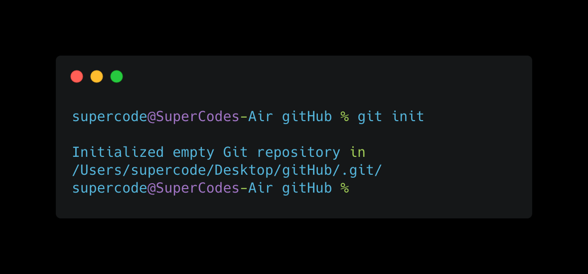
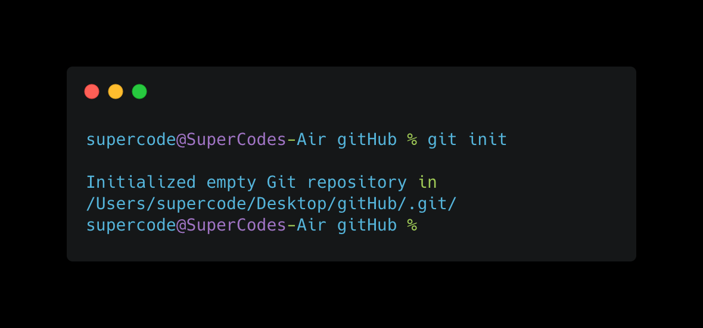
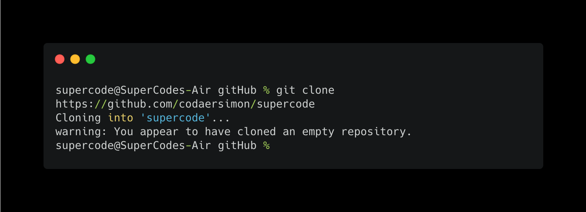
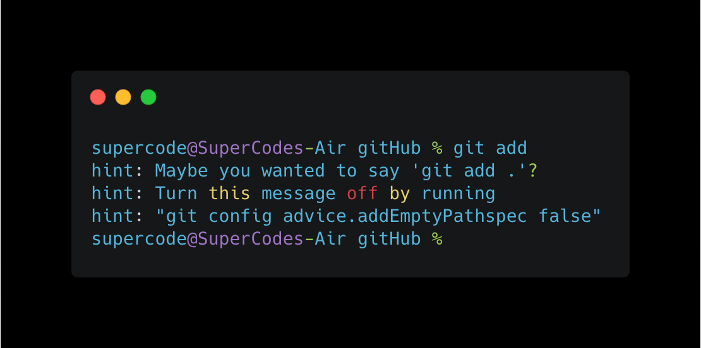
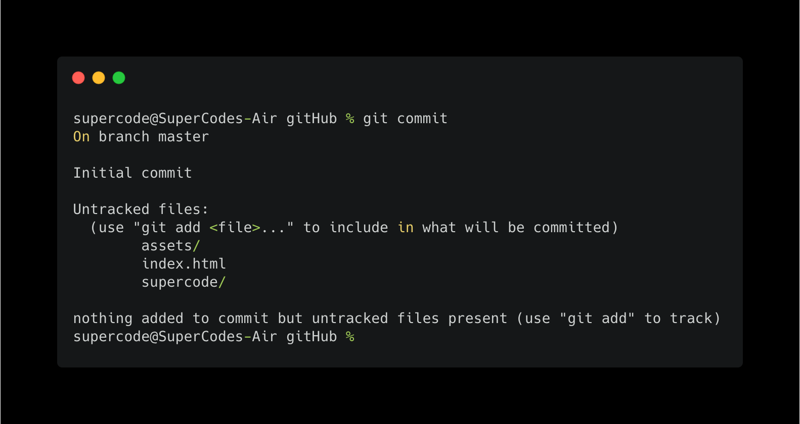
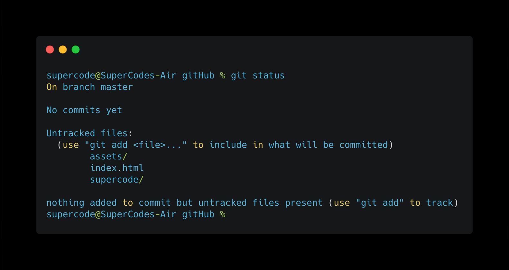
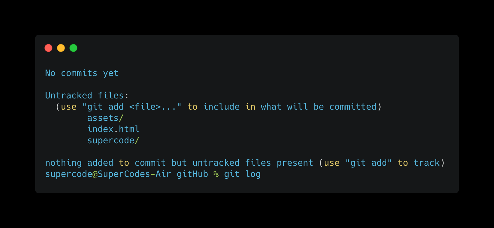
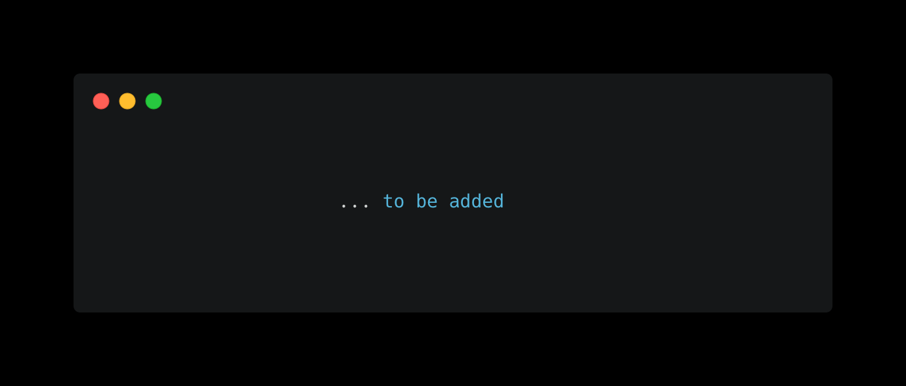

new repository
git init_ command
This command is used to start a new repository.
This command is used to start a new repository.
This command is used to obtain a repository from an existing URL.
This command adds a file to the staging area. You can add a file name or add a "dot" at the end to add all files in one batch.
This command git commit -m “[ Type in the commit message]” records or snapshots the file permanently in the version history. The addition of -a to the command also commits any files you’ve changed since then.
WThis command lists all the files that have to be committed.
This command is used to list the version history for the current branch. If you add –follow[file] This command lists the version history for a specific file, including the renaming of these files.
This command lists all the local branches in the current repository. When a "Name" is added at the end it will create a new branch and with the addition of -d it will delete that branch.
This command is used to connect your local repository to the remote server.
This command sends the committed changes of master branch to your remote repository. You can push individual branches into the repository or with the addtion of -all to update the whole file.
This command fetches and merges changes on the remote server to your working directory.
to be upated ...